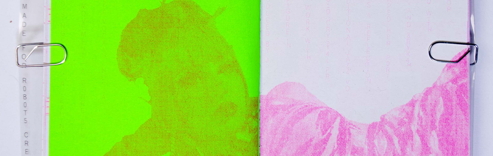
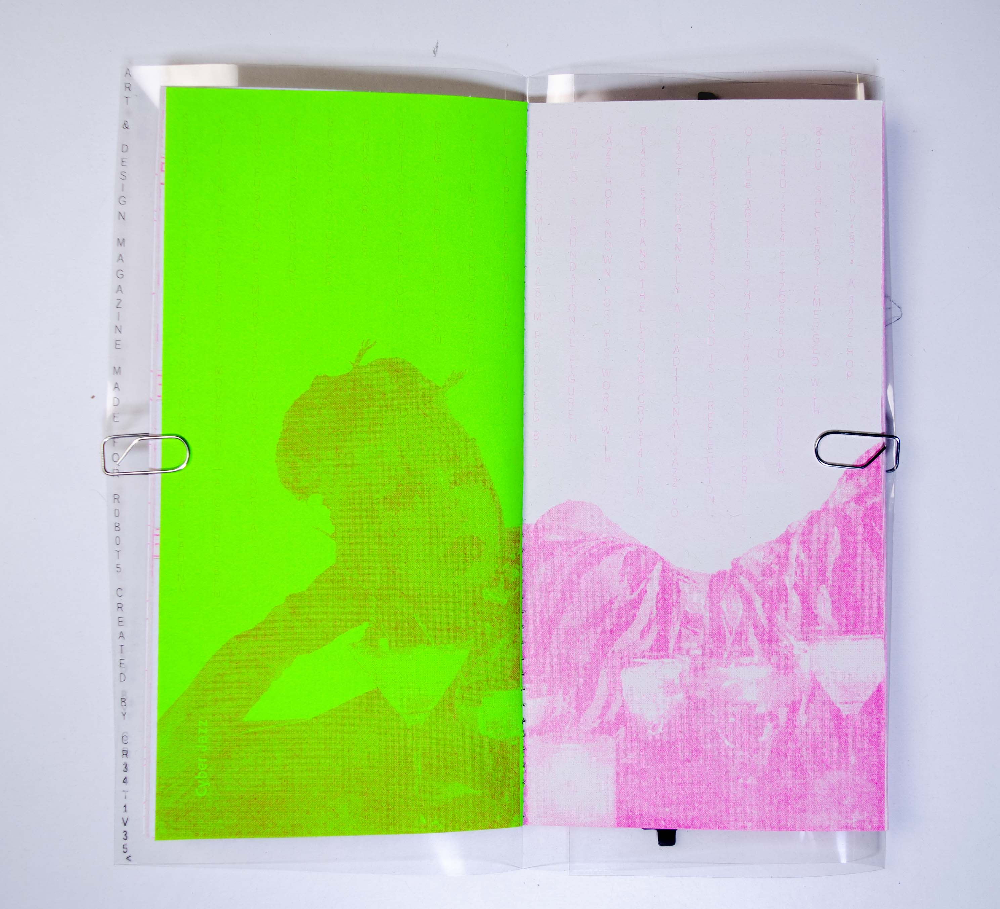
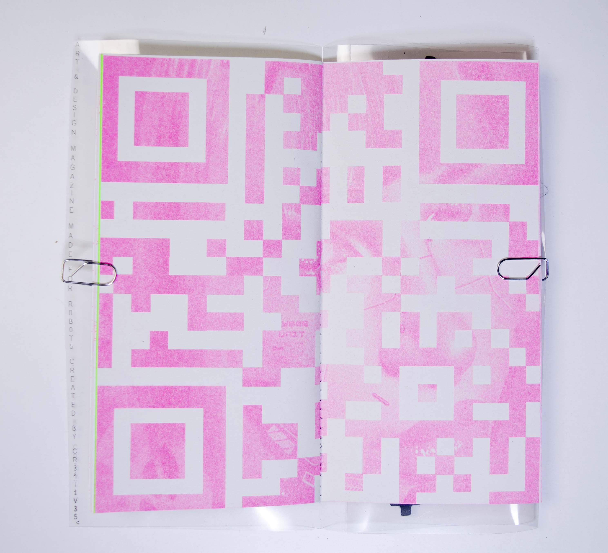

Fanzine du Futur
Réalisation d’un Workshop en risographie avec le designer graphique Hadrien Herzog. En groupe nous avons réalisé une revue d’art futuriste sur le thème du digital, du numérique et de la place que la tech prendra dans le graphisme dans quelques milliers d’années.







Projet Fanzine du Futur - 2025